화약류관리기사 (2011-10-02 기출문제)
1과목: 일반화약학
1. 다음 중 화합화약류의 특유기에 해당하는 것이 아닌 것은?
- -C-0N02
- -C-N02
- -C00H
- -C-N=N-
(정답률: 95%)

2. 화약류의 일반적인 폭발속도로 가장 옳은 것은?
- 블라스팅 다이너마이트는 약 1000 ~ 1200m/s
- 질산암모늄 폭약은 약 7000 ~ 8000m/s
- 초유폭약(ANFO)은 약 2500 ~ 3000m/s
- 카알릿(carlit)은 약 1000 ~ 2000m/s
(정답률: 93%)
3. 혼합다이너마이트에 해당하지 않는 것은?
- 규조토 다이너마이트
- 스트레이트 다이너마이트
- 암모니아 다이너마이트
- 분상 다이너마이트
(정답률: 95%)
4. 탄광폭약의 갱도시험시 메탄가스의 농도는 얼마로 해야 하는가?
- 3±0.3%
- 5±0.3%
- 7±0.3%
- 9±0.3%
(정답률: 59%)
5. 전기뇌관의 풍질시험에서 내정전기시험 항목의 기준으로 옳은 것은?
- 500pF, 8kV에서 발화하지 않을 것
- 500pF, 10kV에서 발화하지 않을 것
- 2000pF, 8kV에서 발화하지 않을 것
- 2000pF, 10kV에서 발화하지 않을 것
(정답률: 84%)
6. 뇌홍에 무엇을 첨가한 것을 뇌홍 폭분(priming composition)이라 하는가?
- 염소산칼륨
- 아지화납
- 니트로글리세린
- 테트라센
(정답률: 89%)
7. 디메틸아닐린을 진한 황산으로 황화한 후 질산을 넣어 니트로화 시킨 것은?
- 피크린산
- TNT
- 테트릴
- 니트로글리콜
(정답률: 83%)
8. 뇌관에 대한 설명 중 틀린 것은?
- 뇌홍뇌관은 뇌홍을 장전한 뇌관이다.
- 칠화납을 기폭약으로 사용하는 뇌관의 관체는 알루미늄을 사용한다.
- 뇌관의 청장약으로 PETN, RDX 가 사용된다.
- DDNP 뇌관은 뇌홍뇌관보다 취급강도가 예민하다.
(정답률: 56%)
9. 뇌홍에 대한 설명으로 옳은 것은?
- 비중에 관계없이 폭발속도는 일정하다.
- 알코올, 에테르, 물에 잘 용해한다.
- 풀민산수은(II)이라고 하며 화학식은 Hg(ONC)2이다.
- 600kg/cm2 이상의 강압에 의해서도 사압(死壓)에 도달하지 않는다.
(정답률: 86%)
10. 질산암모늄의 1 g 당 산소평형 값은?
- + 0.2
- + 0.34
- + 0.392
- + 0.472
(정답률: 57%)
11. 흑색 화약의 성질에 대한 설명으로 옳은 것은?
- 화염과 마찰 * 충격이 둔감하다.
- 습기를 피하면 장기간 저장이 가능하다.
- 주성분은 황산암모늄이다.
- 폭발열은 약 7000kcal/kg 이다.
(정답률: 92%)
12. 다이너마이트에 함유된 NC 의 역할은?
- 예감제
- 산소공급제
- 감열소염제
- 교화제
(정답률: 94%)
13. 동일한 높이에서 10회 연속적으로 추를 떨어뜨려 폭약의 충격에 대한 감도를 반복 시험을 했을 때의 임계폭점(Critical point of explosion)은 어떤 때를 기준으로 정하는가?
- 폭발과 불폭이 각각 50% 일 때
- 10회 완전 폭발할 때
- 10회 완전 불폭할 때
- 폭발과 불폭에 관계없이 정함
(정답률: 100%)
14. 반경 10cm 의 구상 주조 TNT를 중심에서 기폭시켰을 경우 총 폭발에너지는 몇 J인가? (단, TNT 비중은 1.55, 폭속은 6.8km/s, 폭발열은 630k cal/kg 이다.)
- 1.47 × 107
- 1.71 × 107
- 1.16 × 109
- 1.83 × 109
(정답률: 59%)
15. 흑색화약의 조립된 화약은 표면이 거칠고 모가 나기때문에 습기의 칩입 및 정전기를 발생하기 쉽다. 이를 방지하기 위한 공정은?
- 압착
- 혼동
- 광택
- 제분
(정답률: 89%)
16. 니트로셀룰로오스의 제조법이 아닌 것은?
- Abel식
- Nathan식
- Thomson식
- Selwig-Ange식
(정답률: 93%)
17. 다음 중 파괴약이 아닌 것은?
- 발파약
- 작약
- 전폭약
- 점폭약
(정답률: 88%)
18. 화약류의 파괴효과를 측정하는 시험방법은?
- 납관시험
- 내화시험
- 기폭강도시험
- Hess 맹도시험
(정답률: 89%)
19. 니트로글리세린 화약이 연소한 후 발생하는 가스가 아닌 것은?
- C02
- N2
- 02
- HCl
(정답률: 95%)
20. 폭속을 측정하는 시험법이 아닌 것은?
- 이온
- 도트리쉬법
- 광섬유법
- 하이드법
(정답률: 63%)
2과목: 발파공학
21. 다음 그림과 같은 평행공 심빼기 발파에서 무장약공의 직경 ø=102mm이다. 첫 번째 정방형의 한변 길이 W1과 두 번째 정방형의 한변 길이 W2는 얼마인가? (단, 장약공과 무장약공의 중심간 거리는 무장약공경의 1.5배로 한다.)
- W1 = 216mm, W2 = 458mm
- W1 = 322mm, W2 = 683mm
- W1 = 451mm, W2 = 755mm
- W1 = 534mm, W2 = 957mm
(정답률: 29%)
22. 수중발파에 사용되는 폭약의 특성으로 옳지 않은 것은?
- 충격에 민감해야 한다.
- 내수성이 좋아야 한다.
- 폭력이 강해야 한다.
- 수압에 의한 감도 저하가 발생하지 않아야 한다.
(정답률: 40%)
23. 임계약경(Critical Diameter)에 대한 설명으로 옳지 않은 것은?
- 폭약의 폭굉이 전파하지 않는 최소 약경으로 한계약경이라고도 한다.
- 다이나마이트는 초유폭약(ANFO)보다 일반적으로 임계약경이 작다.
- 폭약의 임계약경이 작을수록 제어발파 기능이 우수하다.
- 폭약의 임계약경이 클수록 순폭도가 크다.
(정답률: 20%)
24. 노천발파에서 발파공의 기폭시차에 의한 발파패턴의 조절은 발파결과에 큰 영향을 미친다. 발파공의 열과 열사이의 지연시간(Delay time)에 따른 결과로서 적절하지 않은 것은?
- 짧은 지연시간은 비산에 대해 더 많은 잠재력을 가진다.
- 짧은 지연시간은 자유면에 대해 더 큰 암괴를 발생시킨다.
- 긴 지연시간은 더 많은 지반진동을 야기한다.
- 긴 지연시간은 여굴을 감소시킨다.
(정답률: 7%)
25. 대구경 무장약공을 이용한 수령공 심빼기 방법에 대한 설명으로 옳지 않은 것은?
- 무장약공은 직경이 클수록 효과적이다.
- 설계시 무장약공과 장약공과의 거리와 확대공의 기폭순서가 중요하다.
- 심빼기의 위치는 발파효과를 고려하여 터널단면의 중앙에만 위치시킨다.
- 사용 폭약이나 점화 방법에 따라 사압현상이 발생할 수 있다.
(정답률: 34%)
26. 연암지역에서 ANFO를 사용하는 벤치발파를 이용해 암석을 파쇄하려고 한다. 공당 장약량 54.75kg을 사용하여 발파하였을 때 공당 파쇄암의 체적이 180m3이라면 파쇄암의 평균입자 크기는 얼마인가? (단, ANF0의 상대강도 = 100, 연암의 암석계수 = 5, Cunninghan 식 이용)
- 약 12.5cm
- 약 27.6cm
- 약 77.5cm
- 약 125cm
(정답률: 13%)
27. 발파현장 인근에 보안물건으로 인하여 분산장약(Deck charge)을 적용하고자 한다. 발파공내가 건조한 경우와 습윤 된 경우의 삽입 전색장은 각각 얼마인가?(단, 천공격 75mm 이다.)
- 건조공 450mm, 습윤공 900mm
- 건조공 450mm, 습윤공 1200mm
- 건조공 900m, 습윤공 450mm
- 건조공 1200m, 습윤공 450mm
(정답률: 12%)
28. 발파로 인해 발생한 전단파가 토양층을 통과한다. 공명주파수가 가장 크게 측정되는 토양층 두께는? (단, 통과하는 전단파의 속도는 동일하다.)
- 10m
- 20m
- 30m
- 40m
(정답률: 15%)
29. 비전기식 뇌관을 사용하여 발파를 하고자 한다. 다음 설명으로 옳은 것은?
- 뇌관 내부에 연시장치를 가지고 있어 양호한 초시 정밀도로 지발발파를 할 수 있다.
- 비전기식 뇌관 튜브 연결을 항상 점화순서의 주방향과 반대방향으로 연결해야 한다.
- 1개의 번치 콘넥터(Bunch Connector)당 최대 10개 튜브를 연결할 수 있다.
- 비전기식 뇌관의 튜브는 불로 태우면 폭발하므로 화염에 주의하여야 한다.
(정답률: 37%)
30. 발파 현장에서 암반 천공작업에 의해 발생되는 음향파워레벨이 120dB이며, 수응점이 천공작업을 실시하는 장소와 완전 노출되어 있으며 평지이다. 음원과 수응점이 50m 이격된 거리에서의 음압레벨을 구하면 얼마나 되겠는가? (단, 음원은 점음원으로서 반구면파 전파로 간주한다.)
- 61.21 dB
- 68.21 dB
- 73.94 dB
- 78.02 dB
(정답률: 24%)
31. 다음 중 비산의 발생과 그에 따른 대책에 대한 설명으로 옳은 것은?
- 발파면의 전방비산*최저한계 장약량에 가까울수록 많아지므로 장악량의 조절로 비산문제를 모두 해결할 수 있다.
- 궁저장약에 의한 비산은 천공시의 오차와 암석내 균열에 의해 발생되며 발파면 전방에 파쇄암석을 그대로 방치함으로서 비산을 감소시킬 수 있다.
- 뇌관배열의 영향에 의한 비산은 앞 단계의 파쇄 암석이 완전히 이동한 다음 뒷열의 발파가 이루어지게 힘으로서 감소시킬 수 있다.
- 공구에서의 비산은 약한 폭약으로 많은 부분을 장약하는 것보다 강력한 공저장약과 공구부분의 무장약부분을 크게 함으로서 줄일 수 있다.
(정답률: 9%)
32. 터널 면적과 천공경에 따른 비천공장 및 비장약량에 대한설명으로 옳지 않은 것은?
- 터널 면적이 넓어질수록 비천공장은 감소한다.
- 터널 면적이 넓어질수록 비장약량은 감소한다.
- 천공경이 클수록 비천공장은 짧아진다.
- 천공경이 클수록 비장약량은 감소한다.
(정답률: 8%)
33. 폭약의 위력이나 암석 발파에 대한 저항성을 알고, 약량 산정을 위한 자료를 얻을 목적으로 실시하는 누두공 시험의 문제점으로 옳지 않은 것은?
- 장약을 위한 천공(발파공)이 약선으로 작용한다.
- 실험 횟수를 많게 할 필요가 있지만 실제로는 그렇게 할 수 없다.
- 실제 현장 시험보다는 소형의 모형시험으로 대신하는 경우가 많다.
- 발파 후 형성된 누두공이 원뿔형이 되기보다는 오히려 원뿔형에 가까운 경우가 많다.
(정답률: 40%)
34. 발파해체공법 중 단축붕괴공법(Telescoping)이란?
- 붕락시 구조물을 외측에서 내측으로 끌어당기도록 유도하는 공법이다.
- 일반저긍로 2~3열의 기둥을 가진 건물을 한쪽방향으로 붕괴시키는 공법이다.
- 구조물이 위치한 제자리에 그대로 붕락되도록 하는 공법이다.
- 복합형상으로 이뤄진 건물을 순간적으로 붕괴시키는 공법이다.
(정답률: 29%)
35. Pre-splitting 발파방법에 대한 설명으로 옳지 않은 것은?
- 가장 좋은 결과를 얻기 위해서는 도폭선과 순발 전기뇌관을 이용한다.
- 본 발파에 앞서서 계획 법면의 선상에 미리 불연 속면을 만드는 발파방법이다.
- 암반상태의 미확인 상태에서 본 발파를 시행해야한다.
- Pre-splitting 발파에서는 발파에서는 비석의 위험이 크므로 덮개를 암반표면에 완전히 밀착시켜 비산을 방지해야 한다.
(정답률: 15%)
36. 폭약의 폭굉압 전개 상태를 나타내는 다음 그림의 설명으로 옳지 않은 것은?
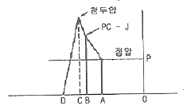
- B점은 폭발 반응이 시작한 직후의 점으로 샤프만 쥬게면에서의 압력을 나타낸다.
- AB구간은 폭발반응에 의한 가스 생성물이 행창유동하고 있는 부분이다.
- A0 구간은 가스의 유동이 완료된 후의 가스압의 상태를 나타내며 정적압력이라 한다.
- Bc 구간은 폭발반응이 일어나는 부분이다.
(정답률: 34%)
37. 다음 그림과 같이 절리가 발달한 암반에 계단발파를 계획하였을 때의 일반적인 장점으로 옳은 것은?
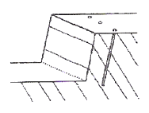
- 여굴이 적다.
- 바닥에 그루터기가 남지 않는다.
- 폭약의 에너지를 효과적으로 이용한다.
- 파쇄된 암석의 이동성이 좁으므로 버럭처리가 쉽다.
(정답률: 18%)
38. 전기발파를 위한 작업 시 발파모선 및 보조모선을 배선할 때 주의사항으로 옳지 않은 것은?
- 배선이 상할 염려가 있는 곳은 보조모선보다 발파모선을 사용한다
- 낙반이나 붕괴가 없는 안전한 위치를 선정하여 배선한다.
- 누전 및 지전류를 없애기 위해 철관, 레일, 동력선 등은 피하여 배선한다.
- 결선부는 다른 선과 접촉되지 않도록 한다.
(정답률: 38%)
39. 다음은 발파효과에 영향을 주는 요소들이다. 이 중에서 비장약량의 선정에 가장 큰 영향을 주는 것은?
- 자유면의 수
- 전색 자료
- 천공 방법
- 기폭 방법
(정답률: 19%)
40. A지구에 매립할 약 3,000,000m 암반을 발파하고자한다. 다음과 같은 조건으로 발파를 실시한다고 가정하면하면 총 폭약 및 뇌관의 예상 소요량은?
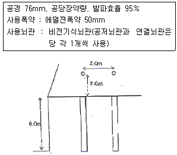
- 폭약-930톤, 뇌관-26.4만개
- 폭약-940톤, 뇌관-26.4만개
- 폭약-950톤, 뇌관-25.4만개
- 폭약-960톤, 뇌관-25.4만개
(정답률: 11%)
3과목: 암석역학
41. 암석의 압열인장강도가 10MPa이고, 일축압축강도가 120MPa이라면 이 암석의 전단강도는?
- 13MPa
- 20MPa
- 25MPa
- 30MPa
(정답률: 29%)
42. 현지 암반(insitu rock)의 조사에 있어, 균열*절리가 없는 무결암(intact rock)의 탄성계수를 Ea, 탄성파 전파속도를 Va, 현지 암반의 탄성계수를 Eb, 탄성파전파속도를 Vb라 하면 균열계수(crack coefficient)는 다음 중 어느 것으로 표시하는가?
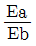
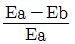
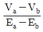
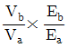
(정답률: 29%)
43. 다음 중 암석돌파(Rock Burst) 현상이 발생할 수 있는 조건으로 옳지 않은 것은?
- 취성적 암반
- 강도가 낮은 연약한 암반
- 깊은 심도
- 국부적 응력집중
(정답률: 18%)
44. 절리 경사각
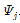
, 사면 경사각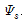
, 절리 마찰각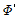
일때 전도파괴(Toppling failure)가 발생하기 위한 조건으로 옳은 것은?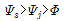
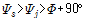
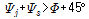
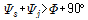
(정답률: 28%)
45. 다음 그림과 같이 응력성분들이 작용할 때 AB면에 적용하는 수직응력의 크기로 알맞은 것은? (단, 압축응력을 “+”로 한다)
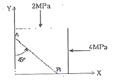
- 1MPa
- 2MPa
- 3MPa
- 4MPa
(정답률: 30%)
46. 암반내 어느 지점에서 암반에 작용하는 초기지압을 측정한 결과 암반의 자중에 의해 발생하는 연직방향의 응력이 최대주응력으로 밝혀졌다. 이 지점에서 지압에 의한 전단파괴로 단층이 형성되었다면 가장 가능성이 큰 단층의 종류는?
- 정단층(normal fault)
- 역단층(reverse fault)
- 변환단층(transform fault)
- 주향이동단층(strike slio fault)
(정답률: 34%)
47. 암석의 일축압축강도가 영향을 미치는 마찰효과(end effect)를 감소시키기 위한 방법으로 옳은 것은?
- 재하속도를 빠르게 한다.
- 시험편을 건조상태로 유지한다.
- 시험편의 길이/직경 비를 2 이상으로 한다.
- 시험편의 형상을 원주형으로 한다.
(정답률: 23%)
48. 시추공 표면에서 공경방향의 변형은 평면응력상태와 평면변형률상태에 따라 달라진다. 포아송비가 0.25일 때 평면 응력상태의 공경방향 변위와 평면변형률상태의 공경방향 변위 차는 얼마인가? (단, 평면응력상태의 공경방향 변위 값은 1cm 이다.)
- 1.25cm
- 0.94cm
- 0.75cm
- 0.06cm
(정답률: 0%)
49. 암석에 대한 전형적인 크리프 거동 그래프에서 2차 크리프 구간에서의 크리프 변형률(ε)과 경과시간(t)간의 관계로 알맞은 것은? (단, ∝는 비례관계를 나타낸다.)
- ε ∝ log t
- ε ∝ ln t
- ε ∝ t
- ε ∝ t
(정답률: 36%)
50. Hoek-Brown 파괴조건식을 암반에 적용하는데 있어서 가장 중요한 가정은?
- 암반의 이방성
- 암반의 등방성
- 암반의 소성 거동
- 암반의 점탄성 거동
(정답률: 22%)
51. 터널설계와 관련하여 불연속면의 주향과 터널의 굴진방향이 어떤 경우일 때 굴착작업의 안전성에 가장 유리한가?
- 불연속면의 주향이 터널의 굴진방향과 수직이고, 경사방향으로 굴착
- 불연속면의 주향이 터널의 굴진방향과 수직이고, 경사의 반대 방향으로 굴착
- 불연속면의 주향이 터널의 굴진방향과 평행하고, 경사각도가 낮을 때
- 불연속면의 주향이 터널의 굴진방향과 평행하고, 경사각도가 높을 때
(정답률: 11%)
52. Griffith 파괴이론에 의하면 일축압축강도는 인장강도의 몇 배 인가?
- 4배
- 8배
- 12배
- 20배
(정답률: 34%)
53. 다음 중 Kaiser 효과에 의한 미세균열 거동 현상을 이용하는 초기응력측정법으로 올바르게 연결된 것은?
- AE(Acoustic Emission)법 - Flat jack법
- AE법 - Doorstopper법
- 수압파쇄법 - 공경변형법
- AE법 - DRA(Deformation Rate Analysis)법
(정답률: 18%)
54. 암석의 파괴이론 중 물체 내 임의 점에서의 3개의 주응력을 직교좌표축으로 하는 좌표계에서 이 점을 둘러싸는 8면체에 작용하는 전단응력, 즉 8면체 전단응력이 일정치에 도달하면 물체가 파괴된다는 이론은?
- Griffith 이론
- Mohr-Coulomb 이론
- Nadai 이론
- Von Mises 이론
(정답률: 29%)
55. 일축압축상태에 놓여진 암반내에 원형공동을 굴착 시 암반내 응력의 크기는 아래의 식으로 주어진다. 다음 그림의 4지점 중 접선방향의 응력이 최대인 지점은? (단 암반은 이상적인 탄성체라고 가정하고, A, B, C, D지점은 터널 벽면에 위치한다.)
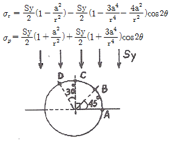
- A 지점
- B 지점
- C 지점
- D 지점
(정답률: 24%)
56. 동일한 암석 시험편 2개를 성형한 후 봉압을 달리하여 2회의 삼축압축시험을 실시하여 다음과 같은 결과를 얻었다. 이 암석의 내부마찰각은?
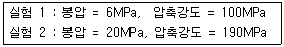
- 40°
- 47°
- 52°
- 56°
(정답률: 13%)
57. 다음 중 주응력에 대한 설명으로 옳지 않은 것은?
- 주응력은 기준 좌표축의 회전에 따라 변화한다.
- 주응력면에는 전단응력 성분이 없다.
- 일축압축시험에서 가압되는 시험편의 접촉면은 주응력면이다.
- 주응력 축들은 서로 수직을 이룬다.
(정답률: 10%)
58. 다음 중 일축압축시험을 실시하는 경우 시험 절차상 준수하여야 할 유의사항으로 옳지 않은 것은? (단, 국제암반역학회(1SRM, 1981)의 제안 사항임)
- NX 이상의 원주형 시험편을 사용하여야 한다.
- 시험편의 직경은 암석에 존재하는 가장 큰 입자보다 10배 이상 커야 한다.
- 직경(D)에 대한 높이(L)의 비(L/D)는 2.5 ~ 3.0으로 한다.
- 재하속도는 1.0 ~ 5.0 MPa/s 가 되도록 한다.
(정답률: 20%)
59. 암반분류법인 Q 분류법에서
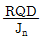
항은 암반의 구조를 나타내는 것으로 암반 블록의 크기에 대한 측정치이다. 이 때 측정치의 최대값과 최소값의 비(최대값/최소값)는 얼마인가?- 10
- 20
- 200
- 400
(정답률: 28%)
60. 다음 중 x-y 평면에 놓여 있는 매우 얇은 평판에 하중이 작용하는 경우 평면응력상태를 가정하였을 때 변형률-응력 관계식으로 옳지 않은 것은?
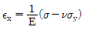
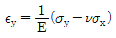
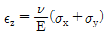
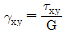
(정답률: 28%)
4과목: 화약류 안전관리 관계 법규
61. 폭약과 비슷한 파괴적 폭발에 사용될 수 있는 것으로서 대통령령이 정하는 것으로 옳지 않은 것은?
- 초유폭약
- 디아조디니트로폐놀 65% 이상을 함유한 폭약
- 면약(질소함량이 12.2% 이상의 것에 한한다.)
- 폭발의 용도에 사용되는 질산요소
(정답률: 25%)
62. 화약류저장소 부속시설의 보안거리에 대한 설명으로 옳은 것은?
- 경비실은 제4종 보안건물에 해당하는 거리의 8분의 1
- 부속시설(경비실 제외)은 제4종 보안물건에 해당하는 거리의 3분의 1
- 경비실은 제 3종 보안물건에 해당하는 거리의 8분의 1
- 부속시설(경비실 제외)은 제3종 보안물건에 해당하는 거리의 3분의 1
(정답률: 24%)
63. 꽃불류저장소 주위의 방폭벽을 보강콘크리트블록조로 설치할 때 두께는 몇 cm이상으로 하여야 하는가? (단, 법규상 기준임)
- 10cm
- 15cm
- 20cm
- 30cm
(정답률: 30%)
64. 총포*도검*화약류 등 단속법상 반드시 면허를 취소해야 하는 사항이 아닌 것은?
- 속임수를 쓰거나 그 밖의 옳지 못한 방법으로 면허를 받은 사실이 드러난 때
- 국가기술자격법에 의하여 자격이 취소된 때
- 면허를 다른 사람에게 빌려준 때
- 공공의 안녕질서를 해칠 염려가 있다고 믿을 만한 상당한 이유가 있는 때
(정답률: 40%)
65. 화약류관리보안책임자가 화약류의 취급 전반에 관한 안전상의 감독업무를 게을리 한 경우 받는 벌칙은?
- 10년 이하의 징역 또는 2천만원 이하의 벌금
- 5년 이하의 징역 또는 1천만원 이하의 벌금
- 3년 이하의 징역 또는 700만원 이하의 벌금
- 300만원 이하의 과태료
(정답률: 19%)
66. 화약류 폐기의 기술상의 기준으로 옳지 않은 것은?
- 얼어 굳어진 다이나마이트는 완전히 녹여서 연소처리하거나 500g 이하의 적은 양으로 나누어 순차로 폭발 처리 할 것
- 도화선은 연소처리하거나 물에 적셔서 분해처리 할 것
- 화약류의 전량이 동시에 폭발하여도 위해가 생기지 아니하도록 폐기장소 주위에 높이 2m 이상의 간이흙둑을 설치할 것
- 연소시키고자 하는 때에는 바람이 적은 날을 택하여 바람이 불어오는 쪽을 향하여 점화할 것
(정답률: 30%)
67. 화약류관리보안책임자를 선임하여야 할 화약류사용자로 맞는 것은?
- 화약 또는 폭약을 1개월에 10킬로그램 이상 사용하거나 3개월 이상 계속 사용하는 사람
- 화약 또는 폭약을 1개월에 25킬로그램 이상 사용하거나 4개월 이상 계쏙 사용하는 사람
- 화약 또는 폭약을 1개월에 40킬로그램 이상 사용하거나 5개월 이상 계속 사용하는 사람
- 화약 또는 폭약을 1개월에 50킬로그램 이상 사용하거나 6개월 이상 계속 사용하는 사람
(정답률: 38%)
68. 꽃불류 외의 화약류의 사용허가신청의 경우 허가신청서에 첨부하여야 하는 서류에 해당하는 것은?
- 제조소명
- 사용순서대장
- 사용하고자 하는 화약류저장소의 설치허가증 사본
- 사용장소 및 그 부근약도
(정답률: 24%)
69. 천공기를 사용하여 불발된 폭약을 제거하여야 한다. 불발된 천공된 구멍으로부터 최소한 몇 cm 이상의 간격을 두고 평행으로 천공하여야 하는가?
- 40cm
- 50cm
- 60cm
- 70cm
(정답률: 30%)
70. 화약류저장소에 흙둑을 쌓는 경우의 기준으로 옳지 않은 것은?
- 흙둑은 저장소의 바깥쪽 벽으로부터 흙둑의 안쪽벽 밑까지 1m 이상 2m 이내의 거리를 두고 쌓을 것
- 흙둑의 경사는 45° 이하로 하고, 정상의 폭이 1m이상으로 할 것
- 흙둑을 부득이 흙담으로 하는 경우에는 흙둑의 높이의 3분의 1 이하로 할 것
- 2개 이상의 저장소가 인접하여 중간의 흙둑을 같이 사용하는 때에는 그 흙둑에 통로를 설치할 것
(정답률: 22%)
71. 화약류저장소에 설치하는 피뢰도선은 직선으로 설치하되 부득이 곡선으로 할 경우의 곡률반경으로 옳은 것은?
- 5cm 이상으로 한다.
- 10cm 이상으로 한다.
- 15cm 이상으로 한다.
- 20cm 이상으로 한다.
(정답률: 27%)
72. 다음 중 운반신고를 하지 아니하고 운반할 수 있는 화약류의 종류 및 수량으로 옳지 않은 것은?
- 총용뇌관 10만개
- 폭발천공기 1000개
- 장난감용 꽃불류 500kg
- 1개당 장약량 0.5그램 이하 실탄 10만개
(정답률: 25%)
73. 다음 중 총포*도검*화약류 등 단속법상의 설명으로 옳지 않은 것은?
- 화약류제조업을 영위하고자 하는 사람은 제조소마다 행정안전부령이 정하는 바에 의하여 경찰청장의 허가를 받아야 한다.
- 화약류판매업을 영위하고자 하는 사람은 판매소마다 행정안전부령이 정하는 바에 의하여 판매소 소재지 관할 지방경찰청장의 허가를 받아야 한다.
- 장난감용 꽃불류 판매업을 영위하고자 하는 사람은 판매소마다 행정안전부령이 정하는 바에 의하여 판매소소재지 관할 경찰서장의 허가를 받아야 한다.
- 화약류 판매소에서 판매하는 화약류의 종류를 변경하고자 하는 때에는 판매소 소재지 관할 지방경찰청장의 허가를 받아야 한다.
(정답률: 24%)
74. 화약류 사용자는 매월의 사용상황을 관할 경찰서장을 거쳐 허가관청에 언제까지 보고하여야 하는가?
- 다음달 15일까지
- 다음달 10일까지
- 다음달 7일까지
- 다음달 1일까지
(정답률: 34%)
75. 다음 중 화약류의 취급방법으로 옳은 것은?
- 화약류를 취급하는 용기는 반드시 목재로 만들어진 견고한 용기여야 한다.
- 얼어서 굳어진 다이나마이트는 30℃이하의 온도가 유지되는 실내에서 누그러뜨린다.
- 사용에 적합하지 아니한 화약류는 즉시 폐끼처리 해야 한다.
- 전기뇌관의 도통, 저항시험 시 시험전류는 0.01mA를 초과해서는 아니된다.
(정답률: 20%)
76. 초유폭약에 의한 발파의 기술상의 기준으로 옳지 않은 것은?
- 기폭량에 적합한 전폭약을 같이 사용할 것
- 가연성가스가 0.1% 이상이 되는 장소에서는 발파하지 아니할 것
- 철관류, 궤도 또는 상설의 전기접지계통은 접지용으로 사용하지 아니 할 것
- 금이 가고 틈이 벌어지거나 공동이 있는 천공된 구멍에는 지나치게 장약을 하는 일이 없도록 할 것
(정답률: 32%)
77. 다음 중 폭약 1톤에 해당하는 화공품의 수량으로 옳은 것은?
- 실탄 또는 공포탄 200만개
- 신관 또는 화관 50만개
- 신호뇌관 250만개
- 미진동파쇄기 10만개
(정답률: 30%)
78. 화약류 운반신고와 관련한 설명으로 옳지 않은 것은?
- 화약류운반신고는 특별한 사정이 없는 한 발송지, 관할 경찰서장에게 운반개시 6시간 전까지 해야한다.
- 화약류운반신고필증은 화약류의 운반기간이 경과한 때에는 지체없이 발송지 관할경찰서장에게 반납해야 한다.
- 화약류운반신고필증은 화약류를 운반하지 아니하게 된때에는 지체 없이 발송지 관할경찰서장에게 반납해야 한다.
- 화약류운반신고필증은 화약류의 운반을 완료한때에는 지체 없이 도착지 관할경찰서장에게 반납해야 한다.
(정답률: 42%)
79. 다음 중 화약류 운반방법에 관한 기술상 기준으로 옳은 것은?
- 디아조디니트로페놀을 주로 하는 기폭약은 수분 또는 알코올분이 15%정도 먹므은 상태로 운반해야 한다.
- 뇌홍을 주로 하는 기폭약은 수분 또는 알코올분이 25%정도 머금은 상태로 운반해야 한다.
- 니트로셀룰로오스는 수분 또는 알코올분이 20%정도 머금은 상태로 운반해야 한다.
- 펜타에리스릿트는 수분 또는 알코올분이 10%정도 머금은 상태로 운반해야 한다.
(정답률: 34%)
80. 지상에 설치하는 1급 저장소의 위치*구조 및 설비의 기준으로 옳지 않은 것은?
- 저장소는 건조한 지대에 설치하고, 기초는 견고히하되, 지면보다 높게 하여 배수가 잘되도록 할 것
- 저장소의 벽은 철근콘크리트블록 또는 석조로 한부분에 있어서는 두께 15cm 이상으로 할 것
- 출입문은 2중문으로 하고 덧문에는 두께 3mm 이상의 철판으로 보강하되 2개 이상의 자물쇠 장치를 할 것
- 저장소의 천정위에는 외부의 공기가 잘 통할 수 있도록 적당한 곳에 환기동을 2개 이상 설치할 것
(정답률: 29%)
5과목: 굴착공학
81. 숏크리트(shotcrete)의 작용 효과로 가장 거리가 먼 것은?
- 원지반의 개량 효과
- 풍화 방지 효과
- 원지반 하중의 배분효과
- 내압 효과
(정답률: 18%)
82. 국내 지하철공사에서 가장 많이 쓰이는 개착공법은? (단, 벽면이 토사층일 경우)
- 흙막이식 공법
- 분할식 공법
- 트렌치 공법
- 소굴식 공법
(정답률: 39%)
83. 사면을 대상으로 하는 암반 분류법인 SMR은 RMR을 기초로 하고, 기타 요소를 고려하여 보정하는 암반분류방법이다. RMR을 결정한 후 SMR을 위해 적용되는 기타 요소가 아닌 것은?
- 사면의 굴착방법에 대한 보정
- 사면의 주향과 절리면의 주향과의 관계
- 절리면의 경사각에 대한 보정
- 절리면에 작용하는 지하수에 대한 보정
(정답률: 22%)
84. 막장 자립이 어려운 연약 사질토에 가장 적합한 굴착공법은?
- 이수식 실드공법
- TBM 공법
- 화약발파공법
- 레이즈 크라이머 공법
(정답률: 27%)
85. 터널굴착을 위해 암반에 대한 RMR(Rock Mass Rating)분류를 실시하여 RMR 값이 50으로 평가 되었다. 이 암반의 마찰각은 어느 정도 값으로 추정되는가?
- 45° 이상
- 35 ~ 45°
- 25 ~ 35°
- 15 ~ 25°
(정답률: 25%)
86. 어떤 흙의 내부마찰각 0' 30°이다. 주동토압계수/수동토압계수의 비는 얼마인가?
- 1/9
- 1/3
- 3
- 9
(정답률: 0%)
87. 주향은 N65W, 경사가 25SW인 절리의 방향성을 경사방향/ 경사의 방법으로 올바르게 표현한 것은?
- 25/025
- 295/25
- 2⑤/25
- 065/025
(정답률: 30%)
88. 다음 중 록볼트를 정착방법에 따라 분류할 때 전면 접착형에 해당하지 않는 것은?
- 모르타르 정착형
- 퍼포(perfo)형
- 그라우트 형
- 확장(expansion) 형
(정답률: 12%)
89. 지반을 불연속체로 가정하여 해석하는 수치해석법은?
- 개별요소법
- 유한요소법
- 유한차분법
- 경계요소법
(정답률: 25%)
90. 터널계측은 일상적인 시공관리를 위한 일상계측(계측 A)과 정밀 분석을 위한 정밀계측(계측 B)으로 분류한다. 다음 중 일상계측에 해당하지 않는 것은?
- 갱내관찰조사
- 내공변위측정
- 지표침하측정
- 천단침하측정
(정답률: 13%)
91. NATM 공법의 기본적 개념으로 옳지 않은 것은?
- 암반의 이완은 최대한 억제한다.
- 터널은 복공과 지반이 일체화된 구조물이다.
- 응력의 재배분을 고려하여 분할굴착을 한다.
- 응력집중을 막기 위해서 단면 형상은 원형을 채용한다.
(정답률: 15%)
92. 균질등방의 반무한 탄성체 지반의 지표에 집중하중 72ton이 작용할 때 하중직하방향 5m 깊이에서 수평방향으로 5m되는 지점의 집중하중에 의한 연직응력은?
- 43.2kg/m2
- 77.5kg/m2
- 162.5kg/m2
- 243.2kg/m2
(정답률: 12%)
93. 일반적으로 지하공동(또는 터널)의 심도가 증가할 경우 발생할 수 있는 경향이 아닌 것은?
- 응력파괴의 가능성이 낮아진다.
- 암반응력이 증대된다.
- 암반강도가 증대된다.
- 불연속면의 빈도가 작아진다.
(정답률: 28%)
94. 토질 사면붕괴의 원인이 되는 전단강도를 감소시키는 요인으로 옳지 않은 것은?
- 느슨한 토립자의 진동
- 공극수압의 증가
- 흡수에 의한 점토지반의 팽창
- 굴착에 의한 균열 발생
(정답률: 15%)
95. 공사로 인한 소음*진동이 작으며 치수성이 좁고 강성이 가장 좋아 대규모 굴착공사에 채택되는 흙막이 공법은?
- 강널판 흙막이
- 강관 널판 흙막이
- 지하연속벽
- 이수고화벽
(정답률: 7%)
96. 암반 내 원형터널을 굴착한 경우 터널천반에서 인장응력이 발생하기 않기 위한 측압계수(K)의 조건은? (단, 암반은 완전탄성체로 가정)
- K ≥ 1/3
- K ＜ 1/3
- K ≥ 1/4
- K ＜ 1/4
(정답률: 22%)
97. 다음 중 일반적으로 사용되는 터널 설계 방법에 해당 되지 않는 것은?
- 폐기물 처리기술의 적용
- 유사조건에서의 설계사례 적용
- 이론해석 및 수치해석법의 적용
- 표준 설계 패턴의 적용
(정답률: 42%)
98. 다음 중 퇴적물의 기원에 따른 퇴적암의 분류에서 화학적 퇴적암에 해당 하지 않는 것은?
- 석회암
- 백운암
- 응회암
- 석고
(정답률: 13%)
99. 다음 중 공내재하시험에 대한 설명으로 옳지 않은 것은?
- 지반의 변형계수, 탄성계수 등을 구하기 위하여 실시한다.
- 시험공의 길이나 방향에 제한을 받기 때문에 기종이나 형식의 선택에 유의해야 한다.
- 공내재하시험은 재하방식에 의해 등분포재하법과 등변위재하법으로 구분된다.
- 이방성이 심한 암반에서는 방향에 따른 탄성계수를 측정할 수 없는 단점이 있다.
(정답률: 28%)
100. 정수압적인 초기응력 P가 작용하는 일정깊이의 암반 내에 지보공*복공 등의 반력으로 내압 P이 작용하는 원형공동을 굴착하였다. 원형공동의 측벽면에서 원형 공동의 반경만큼 이격된 곳에 작용하는 반경방향으 응력()은? (단, 암반은 완전 탄성체로 가정한다.)
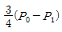
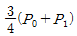
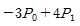
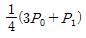
(정답률: 24%)